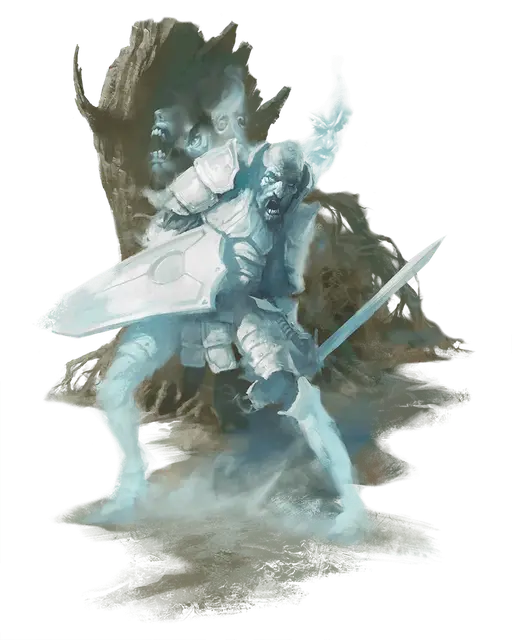

Призрачный воин
Phantom Warrior
Средняя Нежить, любое мировоззрение

Класс Доспеха 16
Хиты 45 (6к8 + 18)
Скорость 30 футов
| мод | спас | ||
|---|---|---|---|
| СИЛ | 16 | +3 | +3 |
| ЛОВ | 11 | +0 | +0 |
| ТЕЛ | 16 | +3 | +3 |
| мод | спас | ||
|---|---|---|---|
| ИНТ | 8 | −1 | −1 |
| МДР | 10 | +0 | +0 |
| ХАР | 15 | +2 | +2 |
Навыки Восприятие +2, Скрытность +4
Сопротивление урону дробящий, колющий, рубящий от немагических атак
Иммунитет к урону некротическая энергия, холод, яд
Иммунитет к состояниям окаменение, опутанность, отравление, сбивание с ног, захват, паралич, очарование, испуг, истощение
Чувства тёмное зрение 60 футов, пассивное Восприятие 12
Опасность 3 (700 опыта)
Бонус мастерства +2
Особенности
Языки. Любые известные ему при жизни
Эфирное зрение. Призрачный воин может видеть на 60 футов на Эфирный план, пока он находится на материальном плане, и наоборот.
Бестелесное передвижение. Призрачный воин может двигаться через других существ и объекты, как если бы они были сложнопроходимой местностью. Он получает 5 (1к10) урона силовым полем, если завершит свой ход внутри объекта.
Спектральная броня и щит. КД призрачного воина учитывает его спектральную броню и щит.
Действия
Мультиатака. Призрачный воин совершает две атаки своим призрачным длинным мечом.
Призрачный длинный меч. Рукопашная атака оружием: +5 к попаданию, досягаемость 5 футов, одна цель. Попадание: 7 (1к8 + 3) урона силовым полем.
Эфирность. Призрачный воин может входить на эфирный план с материального или наоборот. Он виден на материальном плане, когда он находится в пограничном эфире, и наоборот, но на другом плане он не может повлиять ни на то, ни на другое.
Описание
Призрачный воин – это спектральный остаток солдата или рыцаря с большой силой воли, который погиб на поле битвы или умер, выполняя свою присягу. Он появляется как полупрозрачная версия его живого я.
Ведомые целью. Хотя его часто путают с призраком, призрачный воин не стремится выполнить какую-либо незавершенную цель. Он может прекратить свое неживое существование в любой момент. Его дух остается по своей воле, либо из-за верности своему бывшему хозяину, либо потому, что он считает, что он должен сделать нечто, чтобы удовлетворить свою честь или чувство долга. Например, страж, который умирает, защищая стену, может вернуться как призрачный воин и продолжать охранять стену, а затем исчезает навсегда, как только новый страж приходит на его пост или стена разрушается. Период между тем, как он умер, и временем, когда он поднимается как призрак-воин, обычно составляет 24 часа.
Увядшие воспоминания. Призрачный воин сохраняет свою личность и убеждения, которые он имел до того, как он умер, и он помнит, как он умер. Воспоминания о периоде его жизни незадолго до его смерти туманны, а его старые воспоминания забываются полностью. Призрачный воин обычно помнит последние 10 лет жизни; все, что было до этого, – непроницаемый туман.
Силовое присутствие. Хотя они и бесплотны, призрачные воины могут концентрировать энергию вокруг себя, чтобы отклонять атаки и наносить удары с большой силой. Невидимая энергетическая оболочка окружает призрачные доспехи, щит и оружие призрачного воина, которые становятся такими же твердыми, как сталь, но не препятствуют способности воина двигаться сквозь стены и другие твердые предметы.
Природа нежити. Призрачному воину не нужен воздух, еда, питье или сон.